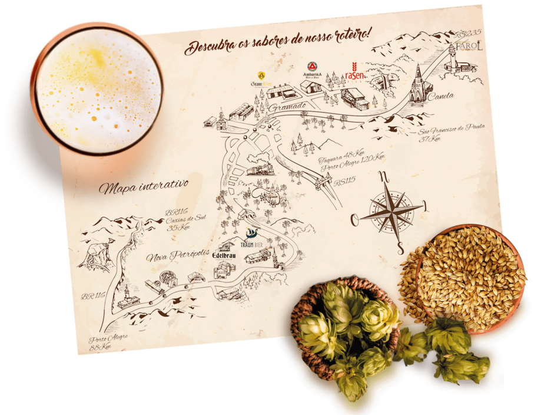

Rota Cervejaria
Rota da Serra Gauchá que engloba as cidades de Nova Petrópolis, Gramado e Canela, tranzendo uma cultura puramente alemã, junto com a sua arquitetura, gastronomia e costumes.
Ao todo são 40Km de rota ligando 6 cervejarias situadas entre a BR 116 e a BR 235.
Essas cervejarias respeitam a lei de "Renheitsgebot", criada pelo Duque da Bavária em 1516, onde estabelecia um limite de apenas 4 ingredientes na formulação de uma cerveja: água pura, malte, lúpudo e levedura.
Abertas durante o ano inteiro, proporcionam aos seus visitantes um momento de degustação e apresentação das cervejas, sendo mais de 20 tipos de cevas diferentes para experimentar.

Segue abaixo as cervejarias disponíveis na rota:
*Para mais informações clique na logos a seguir.